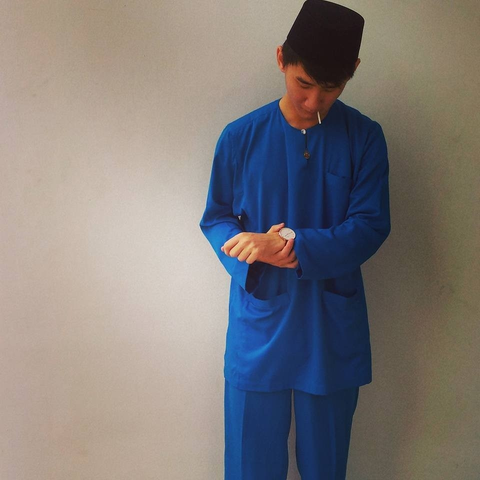

Born in the year of the Sadboys, Gilbert is a optimist with a positive outlook in life. One part of the Sad Boys "culture" is putting 2001, 2002, 2003 or sometimes 2004 in their song/album titles, because they thought those were the
most emotional years.
Gilbert has multiple nicknames, such as Sadboys, Emotionalboys2001, Starboy, Jancuk
Throughout his whole life, Gilbert has been searching for the meaning of being an emotional boy. His journey has gained him new friends, new foes, new opportunities. There were times where he wanted to give up, but having a positive
mental attitude saved him from despair and desolation.